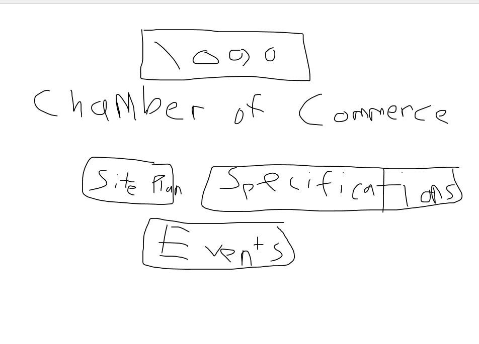
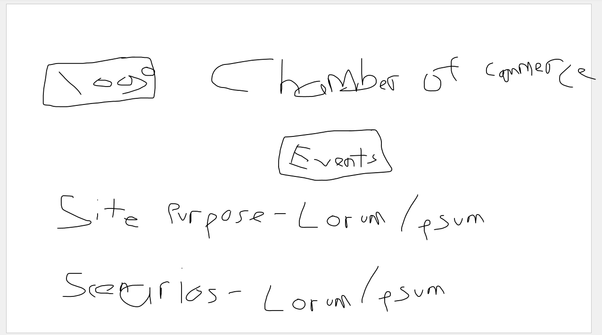

Site Name - Chamber of Commerce - Spring Creek. This is my home town growing up.
Site Purpose - The Spring Creek Chamber of Commerce has been up and going for almost 20 years. It is meant to help the community through non-profits and community services. We help the community be holding event such as parades, fireworks, etc.
Scenarios - What has been the population growth in the area? Where can I find contact information for the Chamber of Commerce Can I find a calander with all the events for a set given time?
Color Schema - I will use white for the background, yellow for the logo, and a blackisk-gray for the text. Maybe I will use a green background for the headers
Typography - Since Roboto has many different designs allocated to it I will use variations of the Roboto font-family

